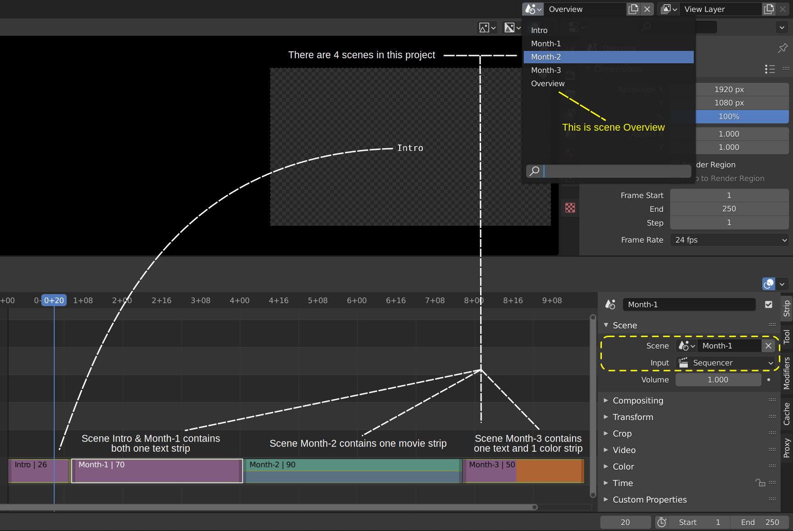

2.2.1.1.5. Scene ストリップ¶
Blender は何よりもまず 3D および 2D modeling 環境です。 これを使用して、美しいリアルまたは様式化された 2D および 3D シーンを作成、アニメーション化、レンダリングできます。 ただし、そのシーンをビデオにレンダリングしてから Video Sequence Editor にビデオ ファイルを挿入する代わりに、シーンを直接挿入することができます。 Scene ストリップは、別のシーンのレンダリング出力をシーケンスに挿入する方法です。 典型的な使用例は、ビデオの 3D ロゴやアニメーション イントロの作成です。
Scene ストリップ バーのデフォルトの色は ███ です。 ストリップの長さは、インポートされたシーンの開始フレームと終了フレームによって決まります。 (参照 work with scenes)。
重要
各シーンには 自身 の ビデオ シーケンサーがあります。Sceneストリップを使用して、シーケンス自身のシーンを挿入することはできません。 scene-1 に 3D アニメーションがある場合、それを scene-2 にScene ストリップとして挿入できますが、 scene-1 には挿入できません。
2.2.1.1.5.1. Options¶
注釈
パネルは他の場所で文書化されています。
次のパネルは Movieストリップのパネルと同じです。
新しいプロパティ Original Frame Range が [Time] パネルに追加されます。名前が示すように、この新しいプロパティはソース シーンのフレーム数を示します。このフィールドは、ソース シーンの長さが変更されると更新されます。ただし、ストリップバーの長さは Sequencer では更新されません。
課題
ソース シーンの実際の長さを反映するようにシーン ストリップの長さを更新するにはどうすればよいですか (メタストリップと同じ問題)。
まったく新しいシーンパネルも追加されます。
2.2.1.1.5.1.1. Scene¶
Reference
Name: |
Scene |
Context: |
Video Sequence Editor > Sequencer |
Location: |
Sidebar > Strip |
{kind=link}
- Scene
アイコンをクリックすると、ソース シーンを選択できます。たとえば、ドロップダウンから Scene1 を選択します。[link/unlink] ボタン (X) を使用すると、選択したソース シーンを削除できます。視覚的に示すために、ストリップバーが赤になります。
- Input
Camera または Sequencer のいずれかを選択できます。この Sceneストリップのコンテンツの元となるソース シーンには、コンテンツを含む Viedeo Sequencerが含まれる場合もあります。したがって、そのシーンの出力は、そのビデオ シーケンサーまたはそのシーンの Camera/Compositor から生成される可能性があります。
ソース シーンで、 Post Processing パネル の [Output]プロパティを選択します。 ただし、その設定を別のシーン内から変更するのは良い習慣ではありません。したがって、この入力を選択すると、2 つの可能性から選択できます。
良い例を図 2 に示します。あなたが四半期報告書の責任者であると仮定します。毎月、素敵なビデオを作成し、そのビデオに別のシーンを使用しました。 四半期の終わりに、それらを組み合わせて概要ビデオを作成したいと考えています。図 2 にプロジェクト ファイルを示します。 これには 5 つのシーンが含まれています (上部の図 2 を参照)。シーン概要の Sequencer には 4 つの Sceneストリップが含まれています。 3か月とイントロ。色から、 このイントロはTextストリップであると推測できます。 これは Preview でも確認できます。シーン Month-2 には、1 つの Movie/Sound ストリップ (青と緑の色) が含まれています。シーン Month-3 には、Text ストリップ (紫) と Color ストリップ (オレンジ) が含まれています。 4 つのシーンはすべて入力として Sequencer を選択しています。
図2 4 つのシーン ストリップを含むシーンの概要¶
Scene ストリップは他のビデオ エディターに比べて Blender 独自の機能ですが、大きな迷惑な点がいくつかあります。 まず、Blender は作業中のエディタ/ワークスペースを保存しません。 シーンの概要については、明らかにビデオ エディタで作業しています。 他のシーンでは、おそらくモデリング ワークスペースを選択し、3D ビューポートで作業していると思います。 シーンの概要からシーンのイントロに切り替えると、Video Sequencer に留まり、手動で他のエディタに切り替える必要があります。 第 2 に、(Prevewしている) 現在のフレームが元のシーンのどこにあるのかわかりません。
3 番目に、プレビュー ウィンドウのサイドバーには Scene Strip Display パネもあります。これらの設定は、Scene ストリップの表示に影響を与える可能性があります。 たとえば、コンポジター出力を Scene ストリップに取得したい場合は、次の4 つの設定を有効にする必要があります
Properties > Post Processing > Compositor
Compositor > Use Nodes > Checked (両方のオリジナルシーン)
View > Scene Strip Display > Rendered
Scene Strip > Input > Camera (最後の2つの対象シーン)
最後に重要なことですが、(複雑な) シーン ストリップの速度は最適とは程遠いです。
- Camera
同じ理由が複数のカメラにも当てはまります。アクティブなカメラは元のシーンに設定されます。 ただし、受信シーンでは別のカメラの使用を選択できます。元のシーンに複数のカメラがある場合、ここでどのカメラを使用するかを選択できます。これはマルチカム編集に非常に役立ちます。
以下の
Show Grease PencilおよびTransparentオプションは、Camera(上記を参照) が選択されている場合にのみ表示されます。- Show Grease Pencil
非レンダリング プレビュー、つまりソリッド モードでグリース ペンシルを表示します。
- Transparent
透明な背景を作成します。これは、シーケンサーを介してグリース ペンシル フィルムをレンダリングするなどのオーバーレイを行う場合に便利です。
課題
これら 2 つのオプションはあまり効果がないようです。
- Volume
この設定では、元のオーディオの音量を上げたり (> 1) 下げたり (< 1) したりできます。 この音量レベルの解釈については、 Volume level を参照してください。